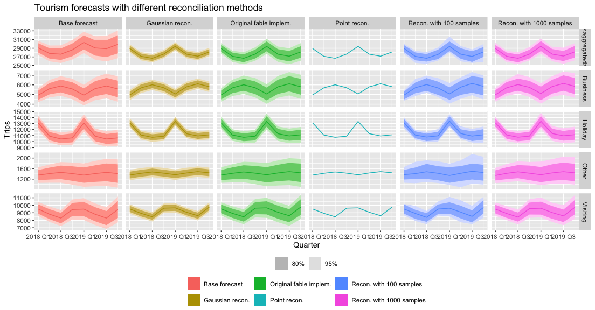

The R package tidyreco provides tools for forecast reconciliation of hierarchical and grouped time series. It integrates the reconciliation methods available in the FoReco package into the fable and fabletools framework.
Installation
You can install the stable version on R CRAN with:
install.packages("tidyreco")You can also install the development version from Github
# install.packages("devtools")
devtools::install_github("danigiro/tidyreco")Example
library(fable)
library(tidyreco)
library(ggplot2)
data <- tsibble::tourism |>
aggregate_key(Purpose, Trips = sum(Trips)) |>
model(ets = ETS(Trips)) |>
reconcile(
csrec = tidy_csrec(ets, comb = "wls"),
csmvn = tidy_csmvn(ets, comb = "wls"),
cssmp100 = tidy_cssmp(ets, comb = "wls", times = 100),
cssmp1000 = tidy_cssmp(ets, comb = "wls", times = 1000),
fbl = min_trace(ets)
) |>
forecast()
data |>
dplyr::mutate(
.model = dplyr::recode(
.model,
ets = "Base forecast",
csrec = "Point recon.",
csmvn = "Gaussian recon.",
cssmp100 = "Recon. with 100 samples",
cssmp1000 = "Recon. with 1000 samples",
fbl = "Original fable implem."
)
) |>
autoplot() +
facet_grid(Purpose ~ .model, scales = "free") +
labs(title = "Tourism forecasts with different reconciliation methods") +
theme(legend.position = "bottom",
legend.title = element_blank(),
legend.box="vertical",
legend.margin = margin())